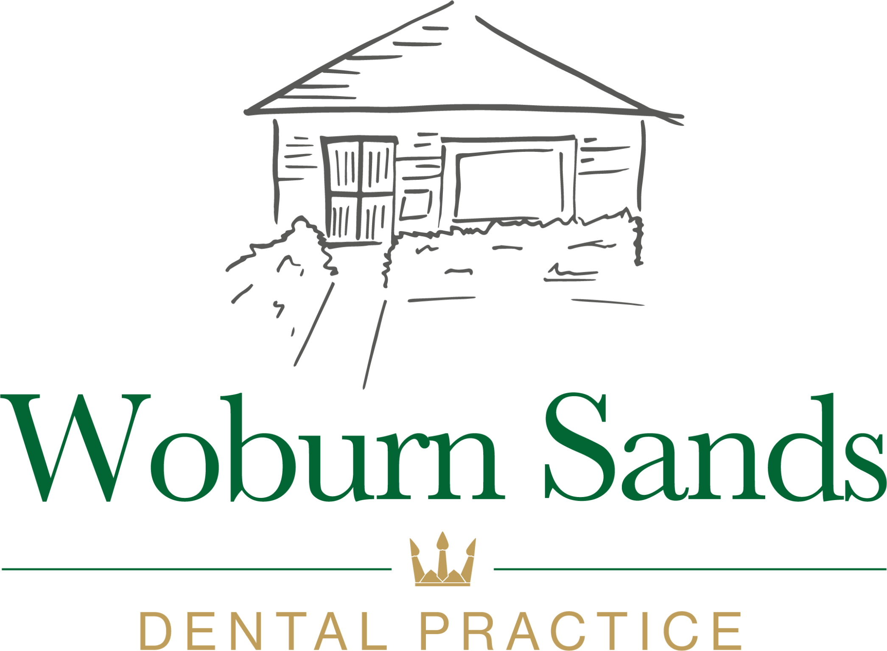

Brand guidelines
Woburn Sands Dental Practice · Milton Keynes · A Kana Health Group practice
woburnsandsdentalpractice.co.ukBrand guidelines · 2026
Woburn Sands Dental Practice is a family-oriented private practice on Theydon Avenue, in a single-storey building set back among trees. Its ground-floor surgeries care for the whole family, from check-ups and hygiene to implants, straightening, cosmetic work and facial aesthetics.
The village is settled and a little older than the rest of Milton Keynes, and many patients have stayed for decades. Others come in from Aspley Guise, Bow Brickhill, Cranfield and Salford, over the Bedfordshire line. They want a dentist who knows them, explains things and never rushes.

A hand-drawn sketch of the practice building over a serif Woburn Sands, then the Kana Health Group crown between two fine rules, above DENTAL PRACTICE in Crown Gold.
Clear space on every side equals the height of the crown. Minimum width is 120px on screen, 30mm in print.
Use full colour on white and the all-white logo on Woburn Green or washed photography. Ads use the horizontal white lockup from the website. The house sketch can stand alone as a watermark, the crown as a bullet. PNG only on Drive: crop from the files, never redraw or retype.



 Detailed dental examinationGround-floor surgeriesMembership plans availableDetailed dental examinationGround-floor surgeriesMembership plans available
Detailed dental examinationGround-floor surgeriesMembership plans availableDetailed dental examinationGround-floor surgeriesMembership plans availableReal people, in the real practice. Team portraits in the surgeries and at the practice sign, the timber and brick building among the trees, and the bright waiting room.
The lime walls belong in the photos, not in the layout. Name a team member only once their name is confirmed with the practice.


Meta statics: a real practice photo under a Woburn Green wash, the white logo, a Manrope headline with its serif italic turn, crown cards, the Mist button and the address strip.
Stories keep the logo and copy out of the top 250px and bottom 340px. Review proof uses the live Google count, rechecked before each batch.